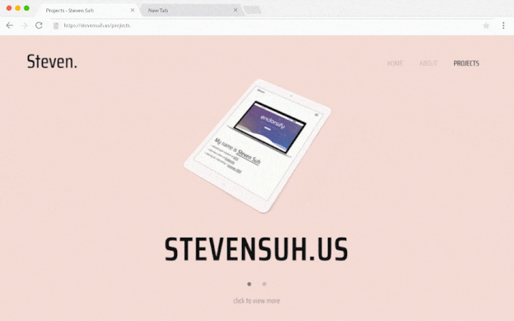

_
Time
Sept 2017
Type
Web Development
Tech
HTML, CSS, JavaScript, jQuery, three.js, smoothState.js
Overview
I wanted to establish my own creative space, as well as a way to showcase my personality on the Internet. And so, I decided to build my own website from scratch.
Here is what I wanted for my website:
Here is what I wanted for my website:
- An interactive way to present my work/projects
- Clean ui and smooth transitions
- Front-end engineering and attempt to follow conventions (such as BEM)
- Utilize JS libraries (like three.js)
- ...
I decided to use GitHub Pages (static hosting) and Cloudflare (free SSL). I also bought a custom domain through Namecheap (didn't know that students can get one for free).
During my planning/designing phase, I came up with several ideas and layouts. To learn more about web design, I referred to many websites on Awwwards (website awards and trends), which was extremely helpful and inspirational.
During my planning/designing phase, I came up with several ideas and layouts. To learn more about web design, I referred to many websites on Awwwards (website awards and trends), which was extremely helpful and inspirational.

Horizontal navigation.
Presentation
I had several ideas on how to present my portfolio. Grid, scroll navigation, interactive map, etc... In the end, I chose horizontal navigation for one main reason: mobile. Also, I found that horizontal navigation integrates well and able to scale as I add more projects.
To make horizontal navigation work, I added different ways to cycle through projects without having to wait in intervals. On mobile, you can swipe to navigate, while on desktop, you can use the arrow keys to cycle.
To make horizontal navigation work, I added different ways to cycle through projects without having to wait in intervals. On mobile, you can swipe to navigate, while on desktop, you can use the arrow keys to cycle.
Typewriter animation.
However, there was an issue: the glitch was too disturbing. To correct it, I created an alternative effect and control its speed.
My solution was to dynamically generate sprites (used GSAP's TweenMax to animate with more control) and limit the speed by lowering the animation's frame-per-second.
Transition
Because this was a static site, I was reluctant on using a front-end framework (e.g. React, Angular). However, I wanted to implement the smooth transitions that these frameworks carried out. Then I found jquery-pjax, where pjax translates to pushState + AJAX.
Ajax allows one to dynamically load content without refreshing (reducing HTTP requests). JavaScript has a method called pushState that allows one to manipulate browser's history and url. With pushState and ajax, jquery-pjax allows a working dynamic loading on a website.
Transition with smoothState.js.
I used smoothState.js, which is an alternative to jquery-pjax that has an emphasis on animated transitions (jquery-pjax does not allow animations in between).
If you didn't know about this, you should try going back and forth!
Optimization
There are many ways to optimize, such as writing a cross-browser code, reducing HTTP requests, minifiying/gzipping, etc.
This step was a very important step in development. I realized that my website was incompatible with numerous browsers. At the same time, I was serving images and scripts that had sizes of megabytes.
To solve these issues, I used these resources:
This step was a very important step in development. I realized that my website was incompatible with numerous browsers. At the same time, I was serving images and scripts that had sizes of megabytes.
To solve these issues, I used these resources:
- Can I use, BrowserStack
- Closure Compiler, CSS Minifier, TinyPNG, Ezgif, Compressify
- PageSpeed Insights, jsPerf
I especially found BrowserStack to be useful in testing different devices (although its free-tier is limited). jsPerf introduced interesting code optimizations (a popular subject is jQuery vs. vanilla JS).
Takeaway
Here is what I've learned:
- Understanding JavaScript. I gradually came to understand JavaScript-specific ideas, especially scope chains, prototypical inheritance, single-threaded event loop, etc.
- Cross-browser compatibility. This was especially important in CSS and JS, where browsers (Chrome, IE, Firefox, etc.) had different working syntax for specific events or properties.
And here is how I plan to become better:
- Write better code. I think there's no end to this, but what I really mean is that I should always further understand {insert language} I use to code. This article focuses on how Google's V8 compiles JavaScript. Just like how the article goes over what goes on behind V8, I think that it is important to learn how anything (language, compiler, intepreter, etc.) works and useful to keep in mind as I program in the future.
- Attempt different languages/frameworks. I hope to use a front-end framework (Angular, React) and HTML/CSS preprocessors (Pug, SCSS) to rebuild this website in the future. I also want to learn to utilize webpack and other tools for web development. What's important is that I should continue to learn new skills as they will allow me to develop with more capabilities.